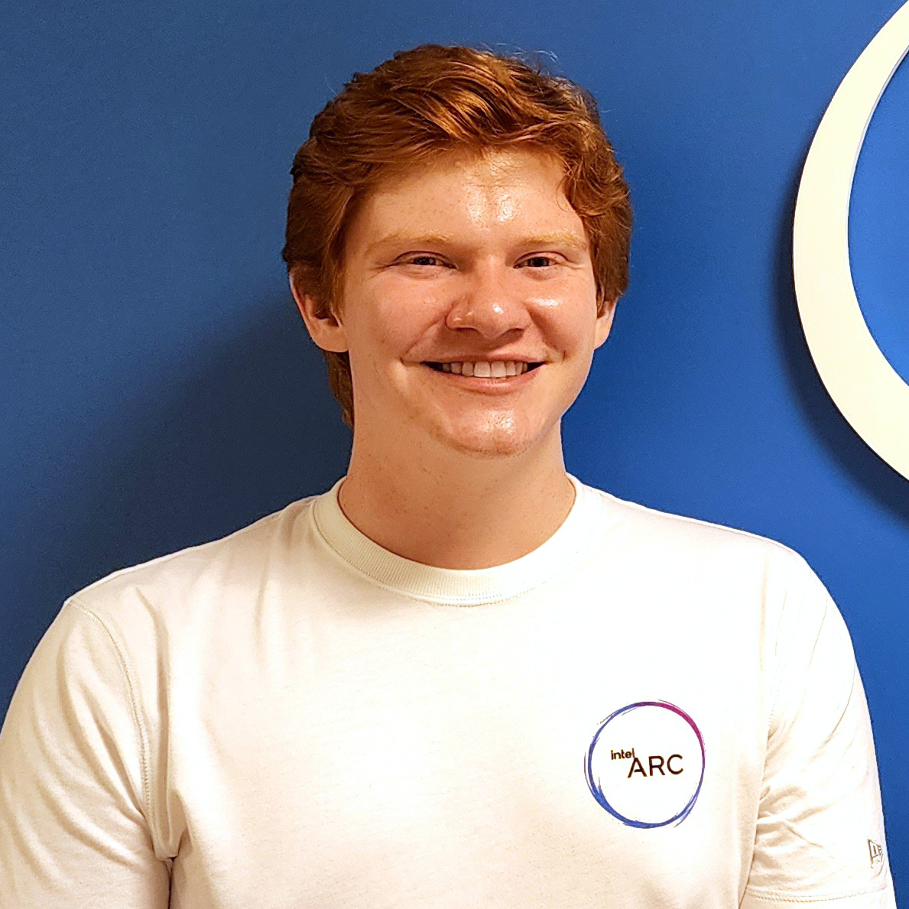

Damages from cybercrime are increasing rapidly year over year. From the perspective of a user, the best way to secure their accounts is by creating a secure password. To maximize security, the password must be both complex and entirely secure – this makes them very difficult to remember!
The HPMKey (Hardware Password Manager) is a small USB device that puts the safety of your login information back into your hands. Equipped with biometric fingerprint scanning, the device acts as a skeleton key that is securely bound to the user. Rest easy knowing that your passwords are safe and secure.
By taking the burden of remembrance off of the user, they are able to follow the security doctrines of complexity and uniqueness, which allows them to create much more secure passwords. This gives the user the same benefits of a software password manager without the need for any software or an internet connection. The device is completely target-agnostic, emulating a USB keyboard. This enables it to function on any device that accepts USB.
|
Rob Oldfield  |
Rob is the team and hardware lead for the HPMkey project. He is responsible for the project’s management, concept, system architecture, schematics and PCB layout, design for manufacturing, power-on testing, reworks, and BOM/budget tracking. Rob has previously held a role as a Graphics Architecture Engineering Intern at the Intel Corporation. Hardware Implementation |
|---|---|
|
Sawoud Al-los |
Sawoud is a Computer Engineering student that has completed a 12-month Internship as a Software Developer at Mitsubishi Heavy Industries – Regional Jets. His main tasks was completing the Windows application portion of the capstone and the website creation, the application was written in a .NET framework (version 4.7.2), using WinForms for the GUI, the PORTS library to communicate to the device over UART, and AES256 for the encryption of data (SHA256 for hashing).
The application gives the user the ability of managing the HPMKey's entries, as well as generating completely random passwords based on requirements provided by the user, to ensure there is even more randomness in the generation, the application depends on the current time to add an additional layer of security for the user. The below link redirects to the repo on GitHub that contains the code, feel free to view it! GUI Implementation |
|
Fernado Kong |
Fernando is the firmware lead. He worked at MHI-RJ as a Project Coordinator and Reporting Analyst. He is in charge of programming the devices functionality in C++, and integrating hardware systems in firmware.
Firmware Implementation |
|
Jeffrey Guo |
Jeffrey Guo is in charge of the mechanical solution of the HPMKey, and makes sure all necessary components of the device are tightly secured in a compact, portable form factor. During his free time, Jeffrey enjoys designing 3D-models for his various personal projects. He is no stranger to the intricacies of 3D printing, and has acquired much experience with CAD software, such as Fusion360 and Adobe Inventor. Case Modeling |